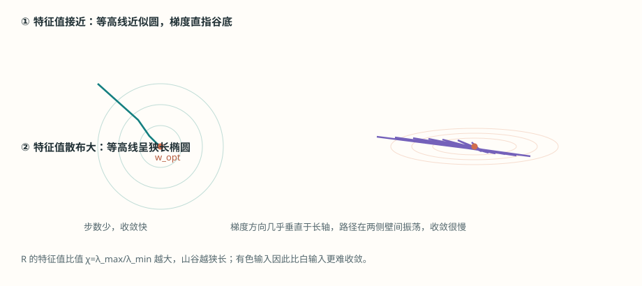
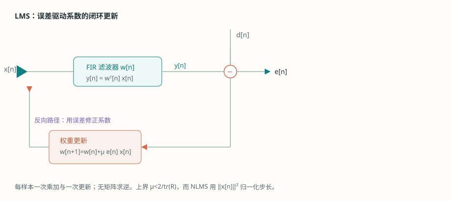

Signal · System · Insight / 15
自适应滤波器：把“设计滤波器”变成“在线估计”
当噪声频段、信道或系统特性随时间变化时，让系数跟着误差一起更新。
固定系数为什么在真实环境里会失效？
前面两章设计的滤波器，系数一旦确定就固定不变。但真实系统里，噪声的频段会漂移、信道会变化、器件会老化、声学路径会随人走动改变。此时固定滤波器的最优假设就被破坏了：它在实验室里表现很好，到了现场却可能明显退化。
自适应滤波器把“先离线算好系数”换成“用误差在线更新系数”：每得到一个样本就根据当前误差修正一次权重，让它能跟踪变化的环境。本章按因果顺序走完一遍：先写出最优解，再看不求逆的迭代如何逼近它，最后得到只需乘加的 LMS 与 NLMS。
Wiener 滤波器与 Wiener-Hopf
设定一个具体问题：期望信号是 ，观测向量是 ，我们用长度 M 的 FIR 权重 估计 ，目标是让均方误差最小。展开后它是 的二次函数：
式（1）：R=E[xxᵀ] 是输入自相关矩阵，p=E[d x]。二次型且 R 半正定，所以只有一个全局最小值。
对 求梯度并令其为零，得到 Wiener-Hopf 方程：
式（2）：解为 w_opt = R⁻¹p；这需要统计量精确已知与矩阵求逆。
两点现实障碍：真实系统里 R、p 是集合平均，通常只能用有限数据估计；而且求逆是 ，对实时长滤波器不可接受。自适应算法就是为了绕过这两点。
最速下降与特征值散布
不用求逆也能到谷底：沿着负梯度方向一步步走，这就是最速下降法。
式（3）：μ 为步长；收敛要求 0<μ<2/λ_max，λ_max 为 R 的最大特征值。
误差曲面的形状由 R 的特征值散布决定。当最大与最小特征值之比很大时，等高面是被拉长的椭圆（狭长山谷）：梯度方向几乎垂直于谷底方向，于是迭代在最陡方向上来回振荡，收敛很慢。这也是为何有色输入下收敛比白输入慢得多。

LMS：用瞬时梯度替代期望
最速下降仍需要统计量 R 与 p。Widrow 与 Hoff 的近似是：用单个样本的平方误差 代替集合平均 。由于 ，于是得到 LMS 更新：
式（4）：e[n]=d[n]−y[n]；整个算法只有乘加与相减，没有矩阵求逆、没有除法。

这里有一个重要的定性结论：LMS 的权重在均值意义下收敛到 Wiener 解（常用输入与误差不相关的近似来证明），但因为用的是瞬时梯度，权重会在最优解附近随机游走，永远停不下来。多出来的稳态均方误差与最小均方误差之比称为失调：
式（5）：tr(R)=M·σ_x²（白输入）。失调随 μ 线性增长，而这正是方差与收敛速度交易的另一半。
所以步长 μ 同时控制两件事：μ 大则收敛快、跟踪快，但失调大、稳定性边际窄；μ 小则稳态准，但收敛慢。工程上应先由收敛条件给出上界，再在该范围内按“要多快收敛 / 能容忍多少失调”选 μ。
收敛条件与 NLMS
LMS 的收敛上界与输入功率直接挂钩：
式（6）：这是比 2/λ_max 更保守但更容易估计的上界。
它的含义很具体：输入信号功率突然变大（比如麦克风被敲击、扬声器音量突升）时，同一个 μ 可能就超过了上界，导致发散。解决办法是用输入向量的瞬时能量归一化步长，得到 NLMS：
式（7）：归一化步长 0<μ̃<2 即可收敛；ε>0 防止分母为零。
NLMS 的收敛性对输入电平不敏感，代价是每个样本多一次能量计算与一次除法。工程上还有一类常见变体是给 μ 加泄漏项（leaky LMS），用来抑制输入激励不足时的参数漂移。
四个经典应用
同一个 LMS 更新式，换个“把什么当参考、把什么当期望”就得到不同应用。四者的区别可以用一张表说清楚：
| 应用 | 参考信号 x[n] | 期望信号 d[n] | 误差含义 |
|---|---|---|---|
| 系统辨识 | 激励（如白噪） | 未知系统输出 | 模型误差 |
| 回声消除 | 扬声器输出 | 麦克风采集 | 残差回声 |
| 信道均衡 | 接收信号 | 训练序列/判决符号 | 符号间干扰残留 |
| 主动降噪 ANC | 参考噪声 | 误差麦克风信号 | 残余噪声 |
系统辨识：把激励送入未知系统，同时送入自适应滤波器；误差收敛后，滤波器系数就是该系统的冲激响应估计。它是回声消除与 ANC 的前置步骤。
回声消除：以扬声器信号为参考、麦克风信号为期望，自适应滤波器建模声学回声路径，再从麦克风信号里减去其输出。路径随人移动而变，所以必须在线更新。
信道均衡：先发一段已知训练序列，用接收信号与训练序列做 LMS 训练；训练后切换为判决导向模式，用解调出的符号当作伪期望继续跟踪。两种模式的区别只在于 d[n] 从哪里来：训练阶段是已知序列，跟踪阶段是判决结果。
主动噪声控制：扬声器到误差麦克风之间存在次级路径，若直接拿参考信号做 LMS 更新，会因次级路径的相位而失稳。FXLMS 先把参考信号过一遍次级路径的估计模型，再送入更新，从而保证收敛。这需要在线/离线估计次级路径。
共同前提：这四类应用都要求“参考信号与期望信号之间存在由某个线性系统联系”的假设大致成立，并要求建模有足够阶数。若非线性或阶数不足，LMS 会把无法建模的残差留在误差中。
交互：步长与学习曲线
下面用一个固定未知系统做系统辨识：输入是确定性伪随机序列，期望输出是未知系统的输出加上一小段确定性噪声。调节归一化步长 μ̃，观察学习曲线（分块平均的均方误差）。
可交互实验：NLMS 的学习曲线
横轴：迭代块；纵轴：分块平均 e²（dB）。滑块 2–180 对应 μ̃=0.02–1.80。噪声使 MSE 有一个下限，步长越大下限越高（失调越大）。
把 μ̃ 从小调大，会看到曲线先快速下降（收敛快），但底部抬升（失调大）；μ̃ 接近 2 时曲线开始振荡不降。这正是式（5）与式（7）描述的折中。
def nlms(x, d, M, mu, eps=1e-6):
w = [0.0] * M
errs = []
for n in range(M - 1, len(x)):
xv = [x[n - k] for k in range(M)]
y = sum(w[k] * xv[k] for k in range(M))
e = d[n] - y
energy = sum(v * v for v in xv) + eps
for k in range(M):
w[k] += mu / energy * e * xv[k]
errs.append(e * e)
return w, errs完整可运行测试（15_lms.py）验证了：LMS/NLMS 在均值意义上收敛到未知系统的系数；失调随步长增大而增大；NLMS 在输入功率突变时仍保持稳定。
自适应滤波的边界
- Wiener-Hopf 的最优解需要精确的 R、p；自适应算法只是逼近它，且带稳态失调。
- 收敛上界依赖输入功率；功率突变时会突破上界，应改用 NLMS 或缩放步长。
- 收敛速度受特征值散布制约：有色输入下即使没有噪声也可能很慢。
- 失调与收敛速度不可兼得；步长挑选就是在这两者间选工作点。
- LMS 只建模二阶统计与线性关系；非线性或建模阶数不足会留下无法消除的残差。
自检：若一个自适应滤波器的输入功率是另一个的两倍，在相同 μ 下，哪个更容易发散？为什么 NLMS 能自动缓解这个问题？
参考资料与接口
- MIT OCW · Discrete-Time Signal Processing：Wiener 滤波、最速下降与 LMS 收敛分析。
- SciPy · lfilter：固定系数滤波，可作为自适应滤波的对照基线。
- SciPy · wiener：维纳滤波的实用近似实现。